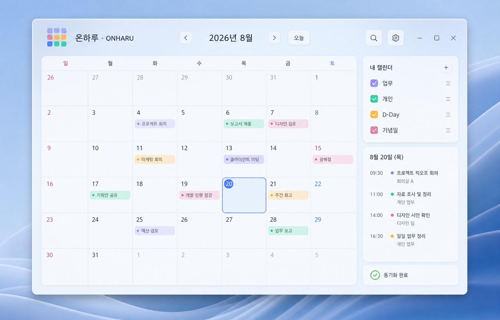

☁
Google Calendar와 로컬 일정, 한 화면에서
연동이 필요한 일정은 Google Calendar로, 개인적인 업무·개인 일정은 내 PC에 보관합니다. 동기화가 지연된 일정도 안전하게 대기 상태로 남깁니다.
일정을 확인하려고 앱을 찾지 마세요. ONHARU는 배경화면 위, 바탕화면 아이콘 아래에서 Google Calendar와 나의 로컬 일정, 시간표와 일기를 자연스럽게 이어줍니다.

복잡한 기능은 단정하게, 중요한 정보는 놓치지 않게.
연동이 필요한 일정은 Google Calendar로, 개인적인 업무·개인 일정은 내 PC에 보관합니다. 동기화가 지연된 일정도 안전하게 대기 상태로 남깁니다.
일정과 할 일을 완료 체크로 관리하고, 미완료 Todo 자동 이월을 선택할 수 있습니다. Google Tasks 연동은 필요할 때만 켭니다.
매일·평일·선택 요일·매월·매년은 물론 같은 주차의 요일과 휴일을 고려한 반복 일정까지 등록합니다.
시험과 마감은 D-Day로, 생일과 결혼기념일은 전용 기념일 카드로 나누어 보여줍니다.
독립된 시간표 창을 원하는 위치에 두고 달력과 함께 사용합니다. 요일·교시·시간과 글자 크기도 바꿀 수 있습니다.
달력의 날짜에서 바로 일기를 쓰고, 나의 일기장에서 검색·정렬하며 차분하게 다시 읽을 수 있습니다.
선택 기능을 켜고 월별 KBO 일정을 불러온 뒤, 보고 싶은 경기만 골라 로컬 ‘야구’ 달력에 추가합니다.
1~6주 범위, 시작 요일, 주차, 음력, 24절기, 쉬는 날과 표시 색상을 선택하고 필요할 때 인쇄합니다.
JSON 백업·복원, 다른 달력용 ICS, Excel용 CSV를 지원합니다. 가져올 항목과 삭제할 일정을 먼저 확인하며, 삭제 전에는 복구용 안전 백업을 자동으로 남깁니다.
ONHARU 로컬 일정은 내 PC에 저장되고, Google 일정은 Google Calendar에서 관리됩니다. 서로 다른 출처를 분명하게 보여주고 내보내기 범위도 구분합니다.
Windows 바탕화면에서 ONHARU 2.1을 만나보세요.